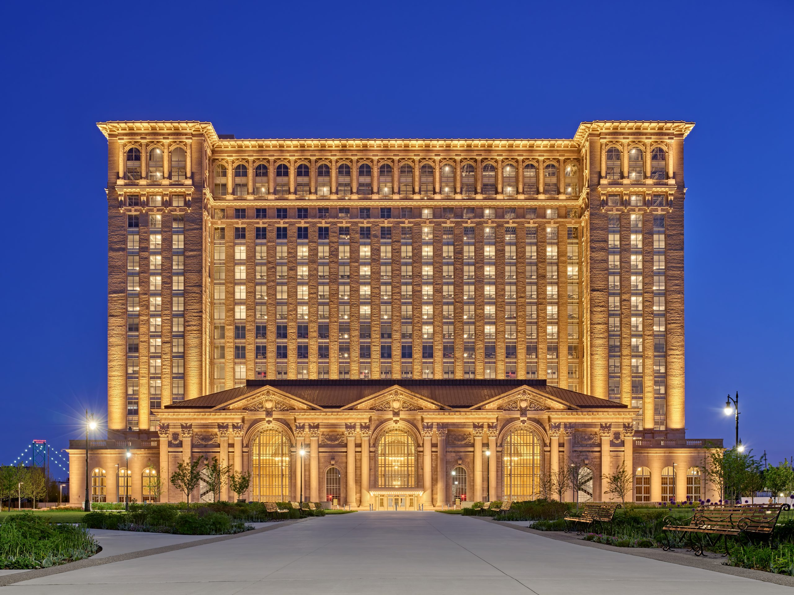
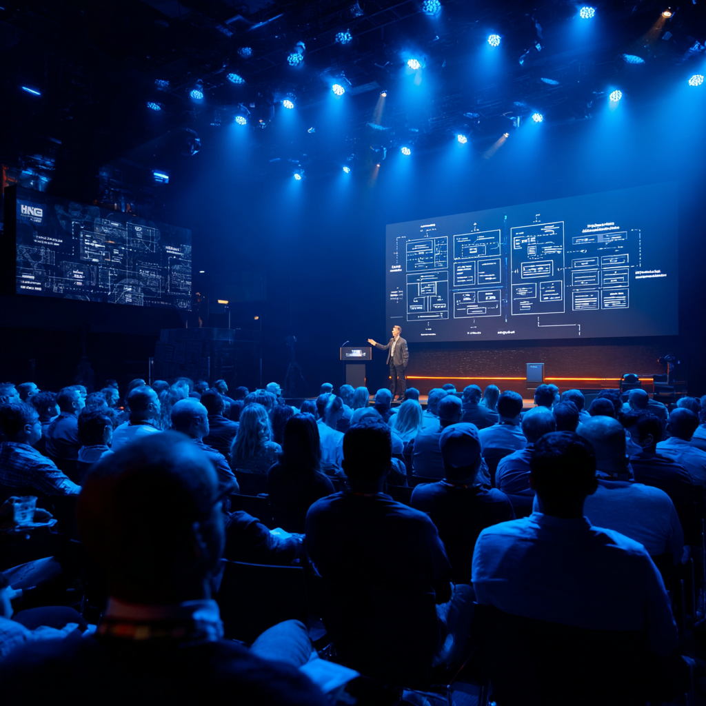

B2B UX Tips
This is where you will gind B2B UX Tips and best practices
The Logic Layer is Southeast Michigan's first conference dedicated to the designers behind B2B, SaaS, and AI-powered products. While most design events celebrate visual craft and consumer brands, we're here for the designers solving complex workflows, enterprise systems, and the human side of machine intelligence. This event brings together product designers, UX leads, design systems engineers, and design-adjacent roles PMs, researchers, and content strategists who are tired of advice built for B2C and ready for conversations that reflect the work they actually do every day. Whether you're designing a 14-step onboarding flow for an enterprise platform, building a component library from scratch, or figuring out how to make AI outputs feel trustworthy to a skeptical user this conference was made for you.


Kick off the day with a keynote that sets the tone for everything that follows. We'll explore what it really means to design for B2B, SaaS, and AI products — where success isn't measured in likes or brand sentiment, but in adoption rates, reduced churn, and workflows that don't make people want to quit. Featuring perspectives from senior product designers and design leaders across Southeast Michigan's tech ecosystem.
Roll up your sleeves for an afternoon workshop built around the real challenges of B2B and SaaS design. Choose from hands-on sessions covering design systems at scale, AI interface patterns, and enterprise onboarding flows. Each session is led by practicing designers who are solving these problems right now not teaching from a textbook.
End the day by connecting with the designers, researchers, PMs, and design leaders you've been in the room with all day. The Logic Layer Mixer is an informal networking session designed to turn a conference into a community. Southeast Michigan's B2B and SaaS design scene is growing come meet the people building it.
⭐ 3 people have RSVP'd to this event!
🎟️ Top 10 Tech CEOs have already RSVP'd.
🎟️ Designers from 20 different states has RSVP'd.
🎟️ Previous Designer of the Year Award Recipent has RSVP'd.